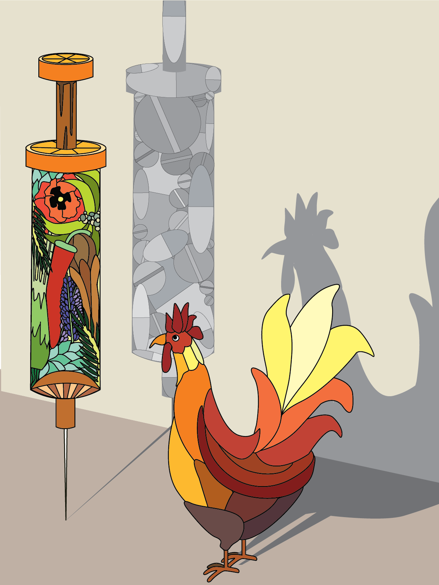

2015 | Adobe Illustrator CC
A class assignment for ART 184: Digital Book Making and Design, this project required creating an illustration based off of an article that discussed the movement against antibiotics in farming and the rising popularity in the use of essential oils as a replacement method.